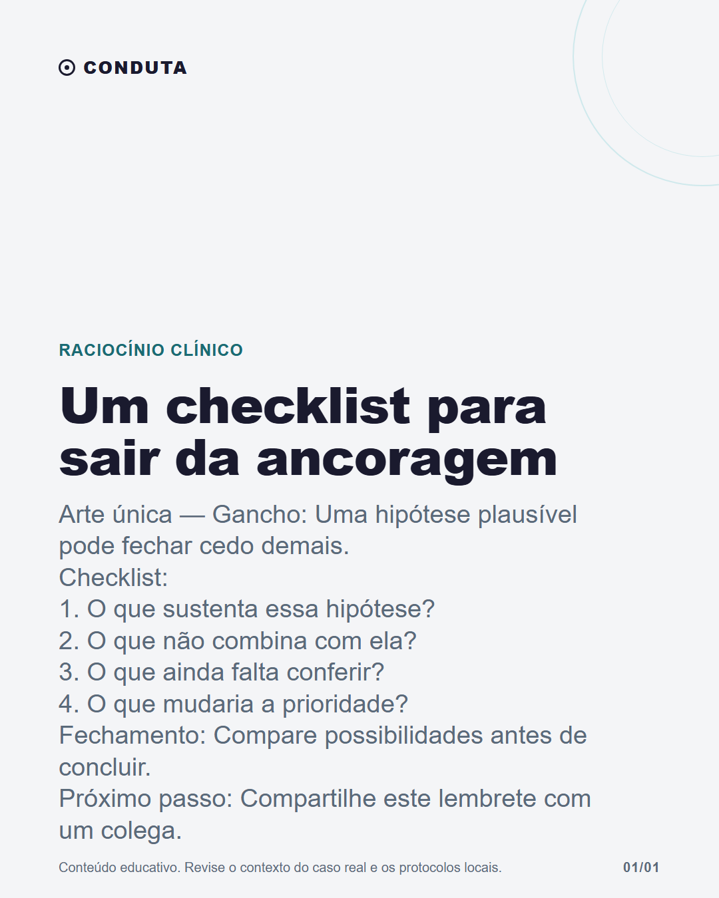

Um checklist para sair da ancoragem

Legenda
A primeira hipótese pode ser um ponto de partida. O cuidado é não tratá-la como ponto final antes de revisar o que sustenta essa leitura, o que ficou de fora e quais dados ainda faltam. Uma pausa curta ajuda a tornar o diferencial mais explícito: — o que favorece a hipótese; — o que não encaixa; — o que ainda precisa ser conferido; — o que mudaria a prioridade. O Conduta pode apoiar essa organização ao estruturar hipóteses compatíveis com a descrição do caso. A lista depende das informações fornecidas e precisa ser conferida pelo médico, com exame, contexto, fontes e protocolos locais.
CTA: Compartilhe este lembrete com um colega.
#raciocinioclinico #medicinageral #educacaomedica #medicosbrasileiros
Validação
Nenhum erro impeditivo.
Nenhum alerta.